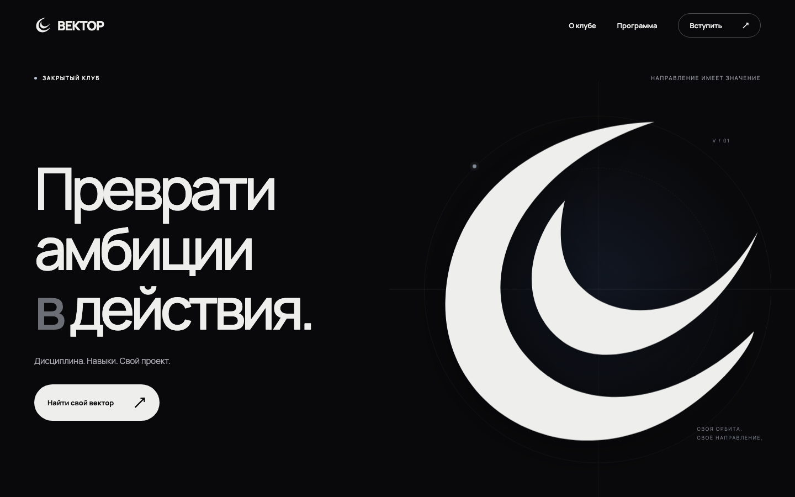
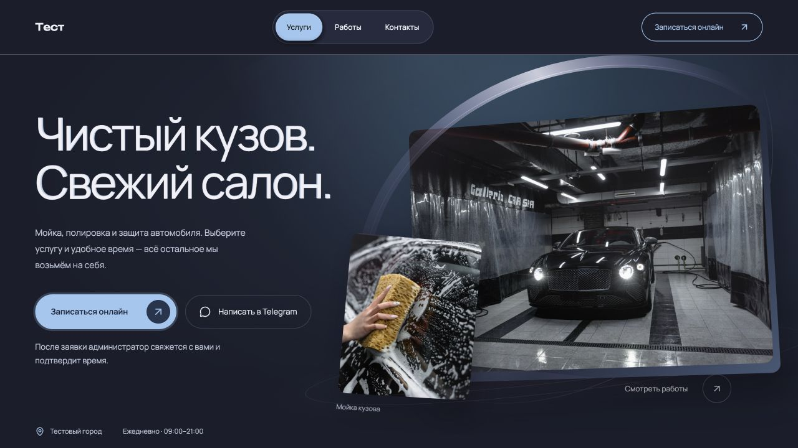
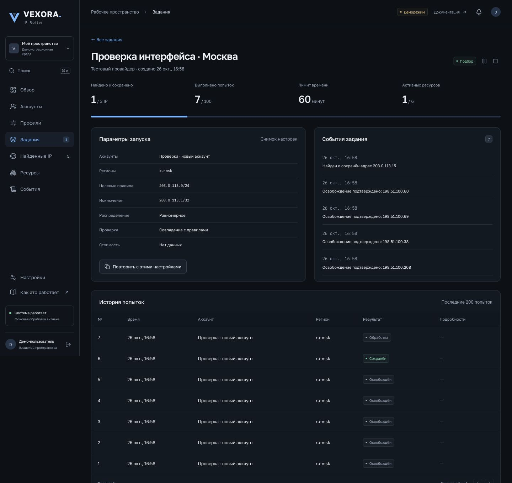

Выразительная типографика, анимация знака и раскрывающиеся карточки программы. Адаптивная статическая сборка с поддержкой reduced motion.
HTML / CSS / JavaScript / GSAP
От первого экрана
до работающего продукта.
Лендинги, онлайн-запись, Telegram
и инструменты для управления инфраструктурой.

Выразительная типографика, анимация знака и раскрывающиеся карточки программы. Адаптивная статическая сборка с поддержкой reduced motion.
HTML / CSS / JavaScript / GSAP

Фотографическая витрина, выбор услуги и времени, кабинет заявок и уведомления. Один шаблон адаптируется под разные студии.
Next.js / React / TypeScript / SQLite
Демонстрационный проект. Фото Tima Miroshnichenko из Galleria Car Spa и Zac Nielson; источники. Не заказ этой студии.
Ещё пять проектов и технических работ.
Раскройте строку, чтобы узнать детали.
Панель управления облачными аккаунтами: правила IP/CIDR, лимиты, сохранённые профили, журнал событий, Telegram и внешний probe.
React / FastAPI / PostgreSQL / Celery / Redis
Доступна локальная демосреда. Работа на реальных облачных аккаунтах не подтверждена.
Описание проекта
Пробный и платный доступ к прокси, покупки, баланс, продления, административные команды. Интеграции платежей, восстановление незавершённых операций и SQLite на постоянном томе.
Python / Telegram Bot API / SQLite / Railway
Описание проектаДиагностика VPN-сервиса на Remnawave/Xray: маршрутизация, конфигурация, доступность узлов, подписки и восстановление. Отдельное направление эксплуатационных работ.
Linux / Remnawave / Xray / Python
Объём работПоиск референсов в Pinterest, подборки, избранное и история без повторов. Сохранение исходных ссылок, доставка медиа и ограничение доступа.
Python / Telegram Bot API / SQLite / ffmpeg / Docker
Сервис для разрешённых пользователей. Автопубликация в TikTok и Threads не подключена.
Описание проектаРасчёт стоимости по параметрам автомобиля, запись в четыре шага, свободные слоты с учётом постов и длительности. Панель владельца с календарём, прайсом и расписанием.
React / Vinext / Cloudflare Workers / D1
Рабочий прототип одной демонстрационной точки.
Исходный код на GitHubЗеркало сообщений Telegram Business: архив, история правок и удалений, веб-просмотр переписки. Go / PostgreSQL / Docker.
Автор исходного проекта — rollce. Участие Андрея пока не подтверждено; проект показан отдельно.
Посмотреть описание Исходник rollceРасскажите, что нужно сделать:
сайт, бот или отдельный инструмент.